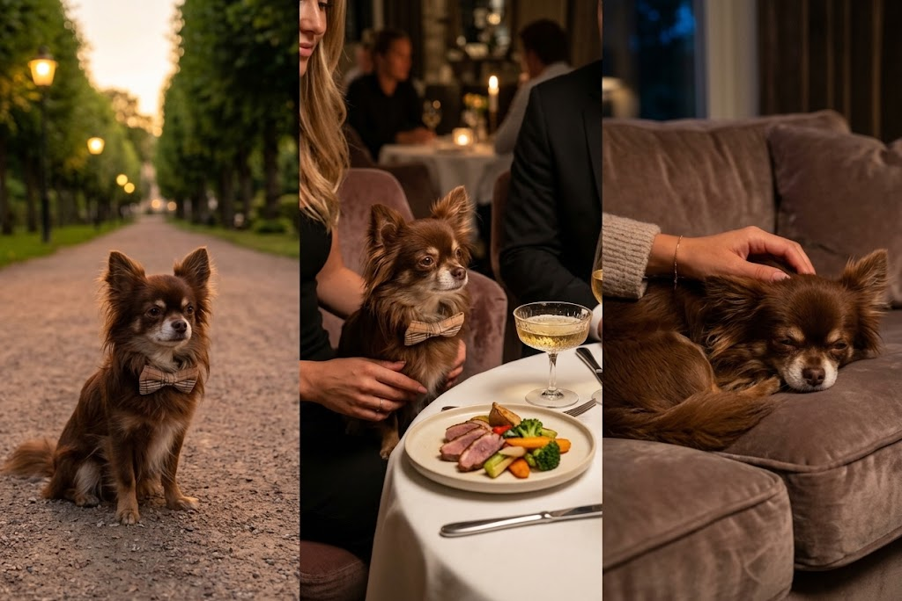
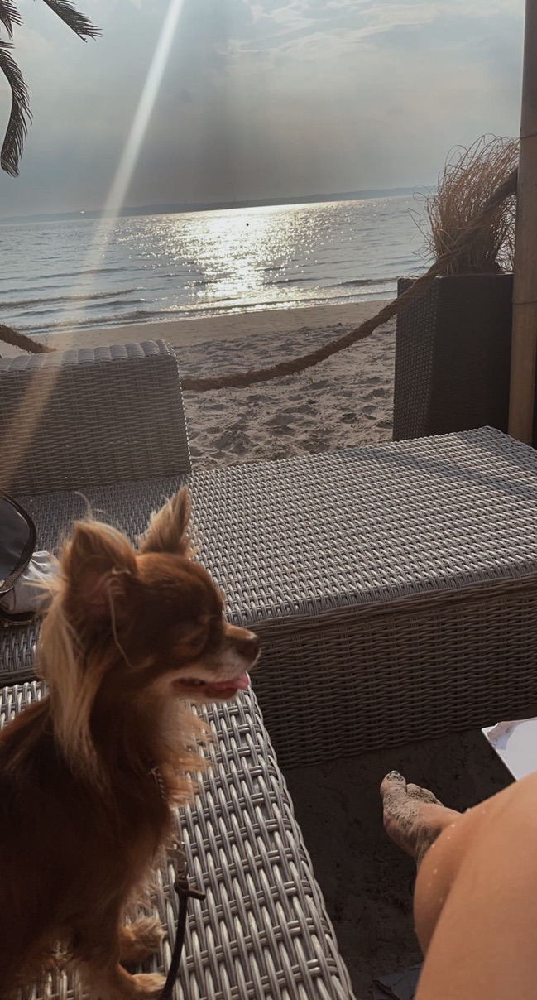

Är han din typ?
Baileys söker sin livspartner! Han är trött på att krama kudden om nätterna och vill hitta sin dröm pälskling att dela sitt liv med.
Ta reda på om du är den perfekta matchen!
Om Baileys
Baileys är en charmig och kärleksfull Chihuahua som nyligen fyllt 7 år. Efter många kortvariga romanser känner han nu att det är dags att stadga sig och hitta någon att dela livet med.
Han är en riktig gentleman med en förkärlek för livets goda. Hans perfekta kväll börjar med en lugn promenad, följt av en mysig middag på en trevlig krog med god mat och gott sällskap. När kvällen börjar lida mot sitt slut uppskattar han inget mer än att komma hem, sjunka ner i soffan och få en välförtjänt massage.
Lerpölar, stress och dåligt sällskap göre sig icke besvär.

Baileys idelala match
Baileys söker en kärleksfull, lugn och trygg tik som uppskattar livets goda.
Hon får gärna vara social, men föredrar en mysig middag framför en stökig utekväll. Långa promenader i solsken uppskattas, men lerpölar och dåligt väder kan hon gärna lämna åt någon annan.
En sofistikerad tik, Baileys har standards. Hon ska helst vara välvårdad, ha god smak och förstå värdet av en bra viloplats.
Drama underbedes. Onödigt spring likaså. Om det inte giller att hoppa i lövhögar. Då finns det inget negativt att säga.
Ett plus om hon är liten i maten. Mer åt Baileys!
Tror du att du eller din pälsking är Baileys perfekta match?
Låt oss ta kontakt! Baileys är inte särskillt lätt inponerad. Hon bör ha rätt personlighet, rätt energi och förstå Baileys extra vaganta personlighet och livsstil.
Endast seriösa förfrågningar. Baileys har raktiskt ett rykte att upprätthålla.
